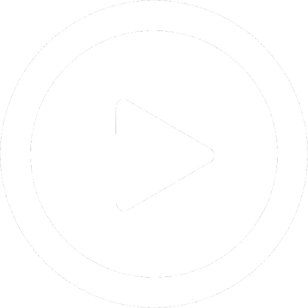

Pronounce Tour Eiffel
As if you were fluent in french

Welcome to Pronounce Tour Eiffel, the best place to learn how to pronounce these french words
This website is always crowded with lots of people who are willing speak french correctly
Enjoy your stay and good luck learning this awesome language!